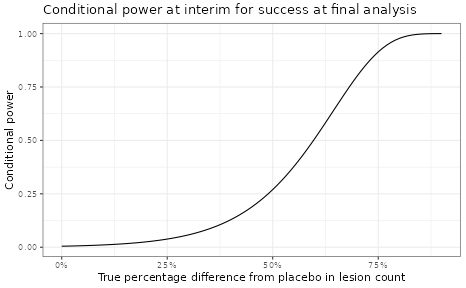

Probability of Success at an Interim Analysis
Yue Li
2023-08-21
Source:vignettes/PoS_interim.Rmd
PoS_interim.RmdAt different stages of drug development, there are questions about
how likely a study will be successful given previously collected data
within the trial itself or data from other earlier trials. For example
given Ph2a (PoC, proof of concept) and Ph2b (DRF, dose range finding)
studies, how likely a new Ph3 study would be successful is of great
interest. Another example, at an interim analysis (IA) of a PoC study,
one would also be interested to understand the probability of success at
the end of the study given the partial data observed.
pos1S() and
pos2S() are constructed to calculate
predictive probabilities for this purpose to inform quantitative
decision making. This vignette shows an example from an IA in a PoC
study, where pos2S() was used to explore
the probability of success for the final analysis given the interim
data.
The primary endpoint for this study is log transformed facial lesion count, assumed to be normally distributed. Decrease in the lesion count upon treatment is considered improvement in the patients. Below is the summary statistics of this primary endpoint by group at the interim.
ia <- data.frame(n=c(12, 14),
median_count=c(20.5, 21),
mean_count=c(23.3, 27),
mean_log=c(2.96, 3.03),
sd_log=c(0.67, 0.774),
row.names=c("active", "placebo")) %>%
transform(se_log=round(sd_log/sqrt(n), 3))
sd_log_pooled <- with(ia, sqrt(sum(sd_log^2*(n-1))/(sum(n)-2)))
kable(ia)| n | median_count | mean_count | mean_log | sd_log | se_log | |
|---|---|---|---|---|---|---|
| active | 12 | 20.5 | 23.3 | 2.96 | 0.670 | 0.193 |
| placebo | 14 | 21.0 | 27.0 | 3.03 | 0.774 | 0.207 |
The predefined dual PoC criteria is as follows,
n <- 21 # planned total n per arm
rules <- decision2S(c(0.9, 0.5), c(0,-0.357), lower.tail = TRUE)
print(rules)## 2 sample decision function
## Conditions for acceptance:
## P(theta1 - theta2 <= 0) > 0.9
## P(theta1 - theta2 <= -0.357) > 0.5
## Link: identityThe interim data were evaluated against the PoC criteria with weakly informative priors for both active and placebo groups. The criteria were not met, although it seemed to show some benefit of the active treatment over placebo numerically. The variability of this endpoint is higher than what was assumed for study sample size calculation.
priorP <- priorT <- mixnorm(c(1, log(20), 1), sigma = 0.47, param = 'mn')
## posterior at IA data
postT_interim <- postmix(priorT, m=ia["active","mean_log"], se=ia["active","se_log"])
postP_interim <- postmix(priorP, m=ia["placebo","mean_log"], se=ia["placebo","se_log"])
pmixdiff(postT_interim, postP_interim, 0)## [1] 0.5900663
pmixdiff(postT_interim, postP_interim,-0.357)## [1] 0.12637The probability of success at the final analysis, i.e. the
probability of meeting PoC criteria at trial completion given observed
interim data, was computed using function
pos2S(). One could assume that the new
data after the interim would be from the same distribution as the
interim data. If the \(\sigma_{1}\) and
\(\sigma_{2}\) in
pos2S() were not specified, i.e. the
previously assumed \(\sigma\) would be
used.
pos_final <- pos2S(
postT_interim,
postP_interim,
n - ia["active","n"],
n - ia["placebo","n"],
rules,
sigma1 = sd_log_pooled,
sigma2 = sd_log_pooled
)The function constructed by pos2S() can
produce the predictive probability given any defined distribution for
the two groups. For example, if the interim posterior distributions are
used, the calculated probability is small, suggesting a low chance of
success at the final analysis given observed IA data.
pos_final(postT_interim, postP_interim)## [1] 0.02413245One can also use oc2S() to compute
conditional power for any given treatment effect.
ia_oc <- oc2S(
postT_interim,
postP_interim,
n - ia["active","n"],
n - ia["placebo","n"],
rules,
sigma1 = sd_log_pooled,
sigma2 = sd_log_pooled
)
delta <- seq(0, 0.9, 0.01) #pct diff from pbo
pbomean <- ia["placebo","mean_log"]
y1 <- log(exp(pbomean) * (1 - delta)) #active
y2 <- log(exp(pbomean) * (1 - 0 * delta)) #placebo
out <-
data.frame(
diff_pct = delta,
diff = round(y1 - y2, 2),
y_act = y1,
y_pbo = y2,
cp = ia_oc(y1, y2)
)
ggplot(data = out, aes(x = diff_pct, y = cp)) + geom_line() +
scale_x_continuous(labels = scales::percent) +
labs(y = 'Conditional power',
x = 'True percentage difference from placebo in lesion count',
title = 'Conditional power at interim for success at final analysis')
R Session Info
## R version 4.3.1 (2023-06-16)
## Platform: x86_64-pc-linux-gnu (64-bit)
## Running under: Ubuntu 22.04.3 LTS
##
## Matrix products: default
## BLAS: /usr/lib/x86_64-linux-gnu/openblas-pthread/libblas.so.3
## LAPACK: /usr/lib/x86_64-linux-gnu/openblas-pthread/libopenblasp-r0.3.20.so; LAPACK version 3.10.0
##
## locale:
## [1] LC_CTYPE=C.UTF-8 LC_NUMERIC=C LC_TIME=C.UTF-8
## [4] LC_COLLATE=C.UTF-8 LC_MONETARY=C.UTF-8 LC_MESSAGES=C.UTF-8
## [7] LC_PAPER=C.UTF-8 LC_NAME=C LC_ADDRESS=C
## [10] LC_TELEPHONE=C LC_MEASUREMENT=C.UTF-8 LC_IDENTIFICATION=C
##
## time zone: UTC
## tzcode source: system (glibc)
##
## attached base packages:
## [1] stats graphics grDevices utils datasets methods base
##
## other attached packages:
## [1] dplyr_1.1.2 scales_1.2.1 ggplot2_3.4.3 knitr_1.43 RBesT_1.7-1
##
## loaded via a namespace (and not attached):
## [1] gtable_0.3.3 xfun_0.40 bslib_0.5.1
## [4] processx_3.8.2 inline_0.3.19 callr_3.7.3
## [7] vctrs_0.6.3 tools_4.3.1 ps_1.7.5
## [10] generics_0.1.3 stats4_4.3.1 parallel_4.3.1
## [13] tibble_3.2.1 fansi_1.0.4 highr_0.10
## [16] pkgconfig_2.0.3 checkmate_2.2.0 desc_1.4.2
## [19] RcppParallel_5.1.7 assertthat_0.2.1 lifecycle_1.0.3
## [22] farver_2.1.1 compiler_4.3.1 stringr_1.5.0
## [25] textshaping_0.3.6 munsell_0.5.0 codetools_0.2-19
## [28] htmltools_0.5.6 sass_0.4.7 yaml_2.3.7
## [31] Formula_1.2-5 pillar_1.9.0 pkgdown_2.0.7
## [34] crayon_1.5.2 jquerylib_0.1.4 cachem_1.0.8
## [37] StanHeaders_2.26.27 abind_1.4-5 rstan_2.21.8
## [40] tidyselect_1.2.0 digest_0.6.33 mvtnorm_1.2-2
## [43] stringi_1.7.12 purrr_1.0.2 labeling_0.4.2
## [46] rprojroot_2.0.3 fastmap_1.1.1 grid_4.3.1
## [49] colorspace_2.1-0 cli_3.6.1 magrittr_2.0.3
## [52] loo_2.6.0 pkgbuild_1.4.2 utf8_1.2.3
## [55] withr_2.5.0 prettyunits_1.1.1 backports_1.4.1
## [58] rmarkdown_2.24 matrixStats_1.0.0 gridExtra_2.3
## [61] ragg_1.2.5 memoise_2.0.1 evaluate_0.21
## [64] rstantools_2.3.1.1 rlang_1.1.1 Rcpp_1.0.11
## [67] glue_1.6.2 jsonlite_1.8.7 R6_2.5.1
## [70] systemfonts_1.0.4 fs_1.6.3